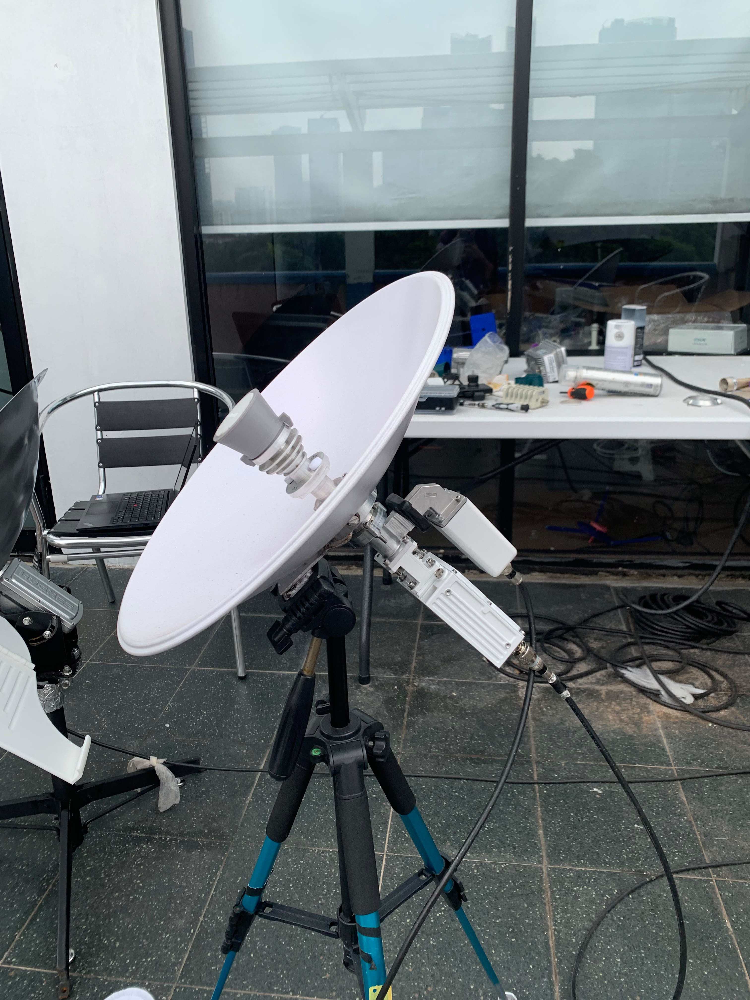
VSAT & Field Work
VSAT Site Installation
Equipment installation and initial system checks at a remote site.
Technical Support Engineer with more than 2 years of experience in telecommunications, network infrastructure, and technical support. Experienced in network troubleshooting, system monitoring, root cause analysis, VSAT systems, and technical documentation.
I am a telecommunications and network engineering professional with hands-on experience supporting VSAT communication systems, IP networks, and monitoring platforms.
During my time as a System Engineer at PT Transtel Universal, I worked on remote-site VSAT deployment, network configuration, system monitoring, troubleshooting, and technical reporting.
I am comfortable working in operational environments that require fast response, structured fault analysis, clear documentation, and coordination with technical teams.
Selected technical projects and troubleshooting experience.
Supported installation and configuration of HT2300 and Gilat VSAT systems at remote sites, including network setup, connectivity checks, and troubleshooting.
Worked with Peplink-based connectivity solutions involving VSAT and cellular WAN, failover concepts, SpeedFusion, and FusionHub.
Contributed to technical design discussions for remote monitoring from mobile or field units to a central hub, combining CCTV, radio/HT audio, and drone video with VSAT and cellular connectivity.
Investigated RF output power and 10 MHz reference distribution alarms, reviewed module status and signal levels, and performed technical fault isolation.
Involved in technical coordination and system-level work for a site-diversity scope involving Ku-band outdoor SSPA/BUC equipment, UPC units, and ViaLite equipment.
Used NMS, PRTG, and Zabbix to monitor network conditions, investigate alarms and service issues, document findings, and support operational follow-up.
Participated in a project to develop a battery pack as the power source for an electric bicycle. The project provided practical exposure to battery-pack development and electric mobility applications.
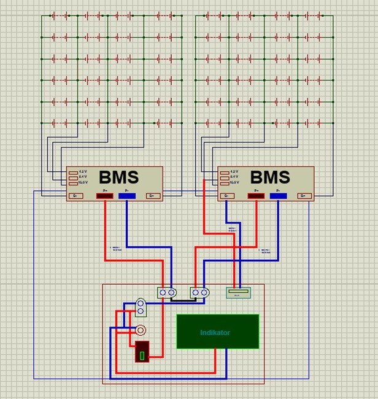
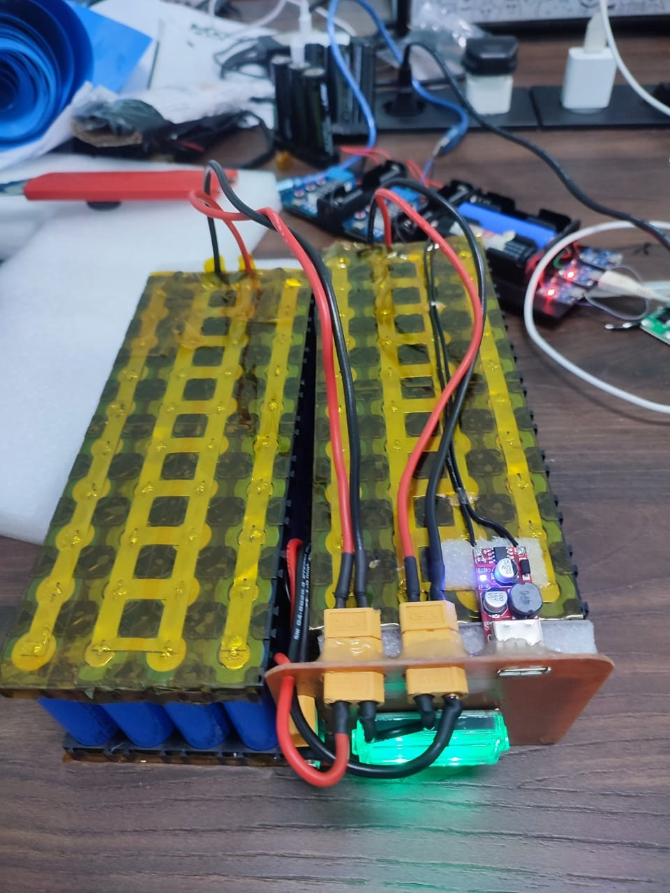
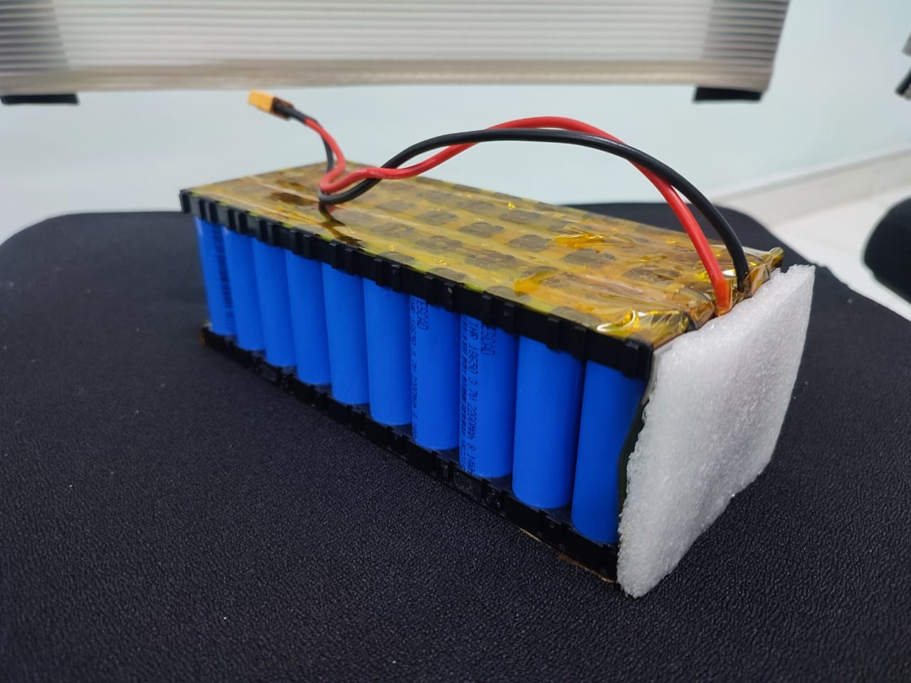
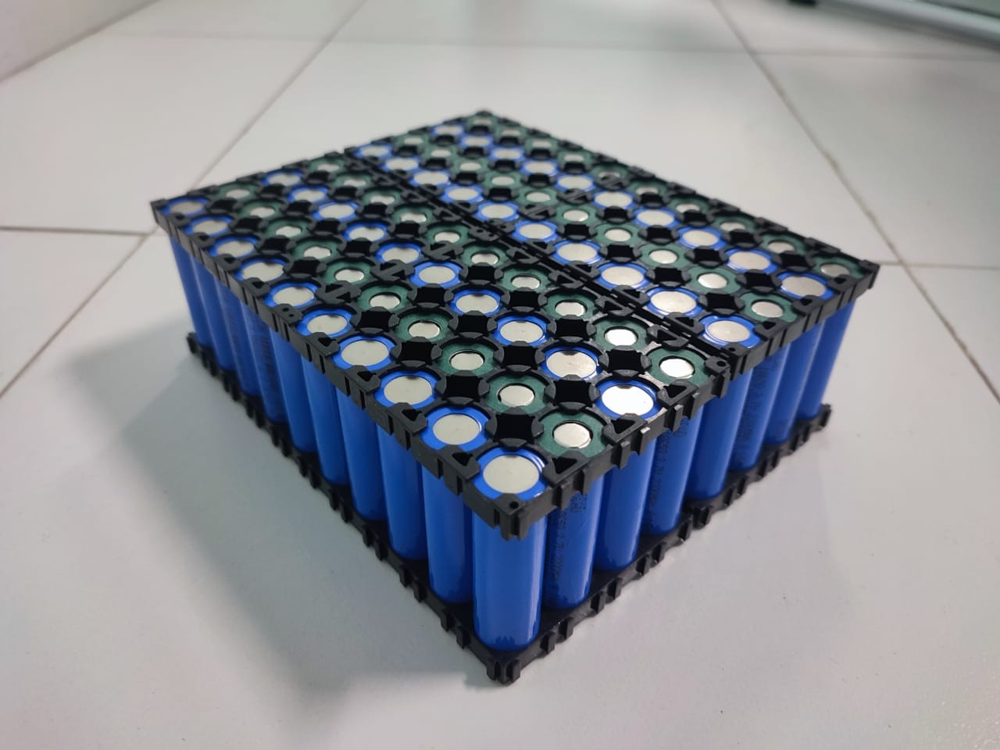
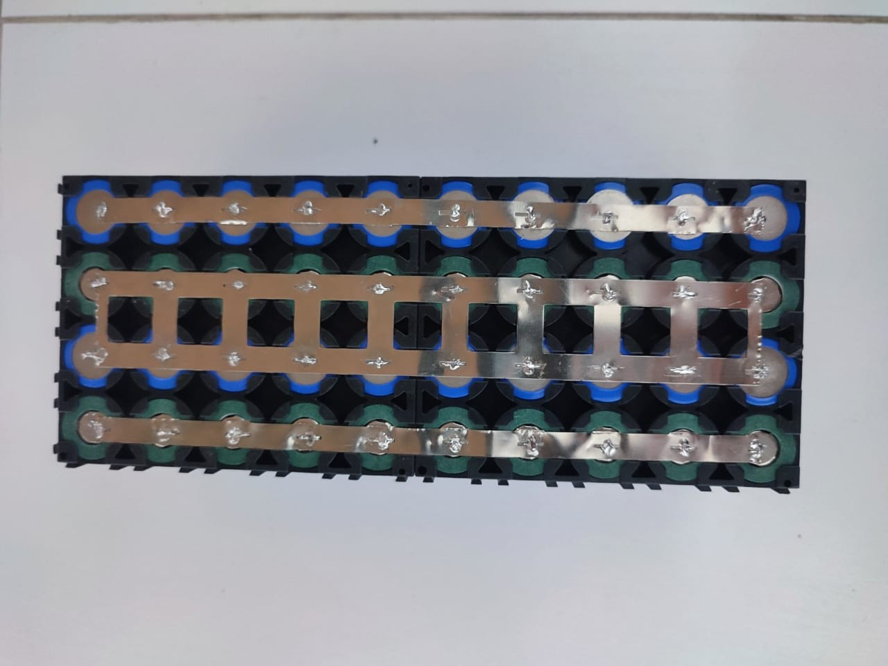
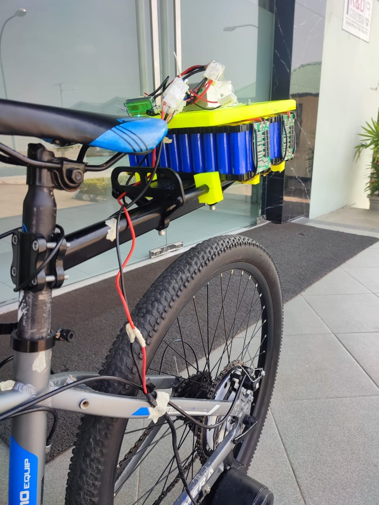
A visual collection of field activities, system installations, troubleshooting, testing, and technical work.

Equipment installation and initial system checks at a remote site.
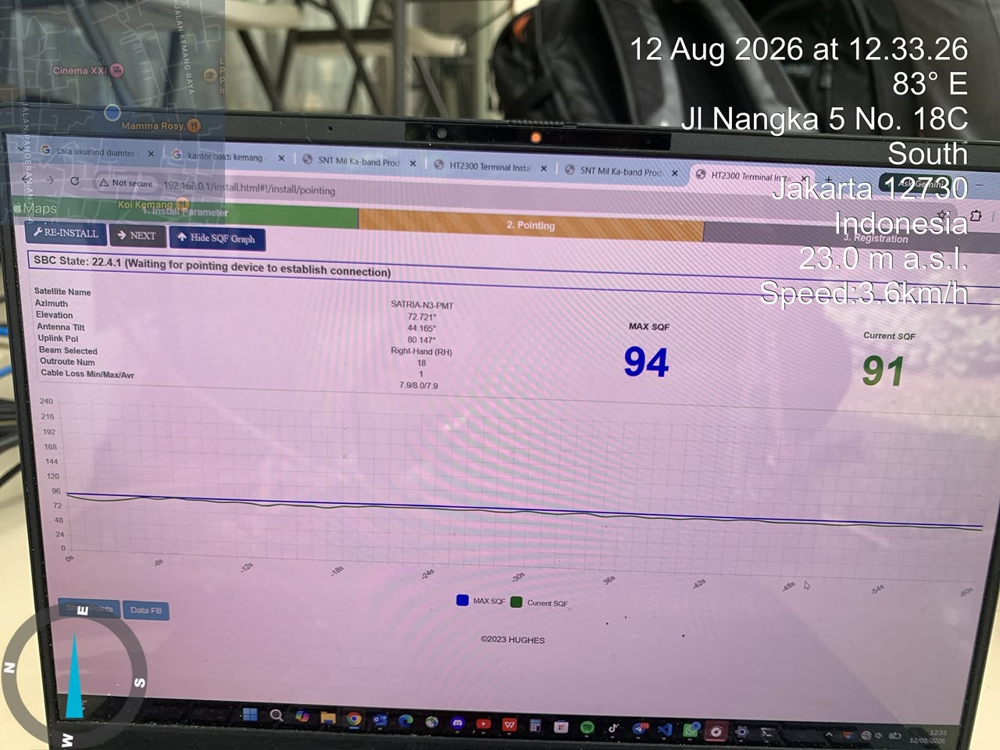
Antenna pointing, signal acquisition, and commissioning.
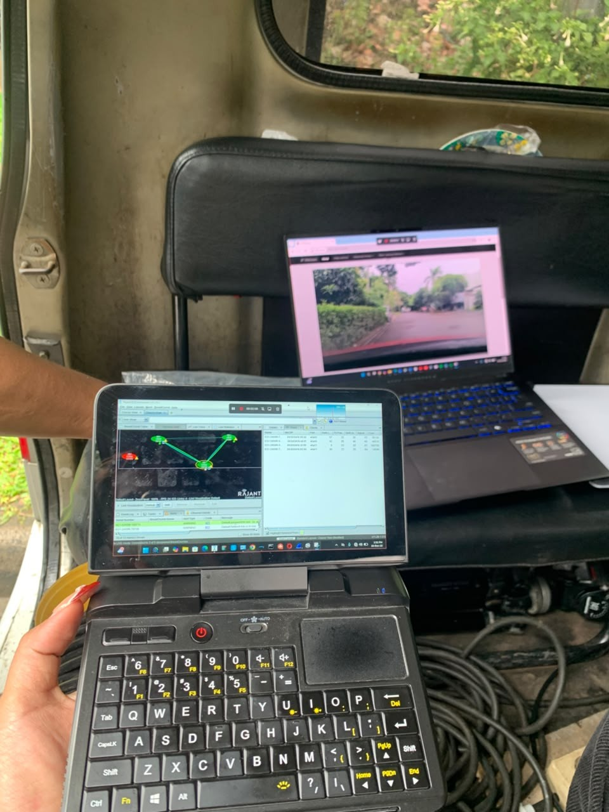
Router setup, IP addressing, and connectivity checks.
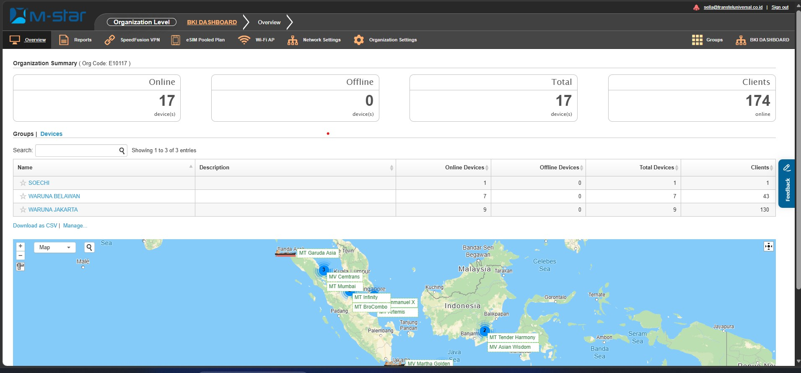
Reviewing network status, alarms, and performance indicators.
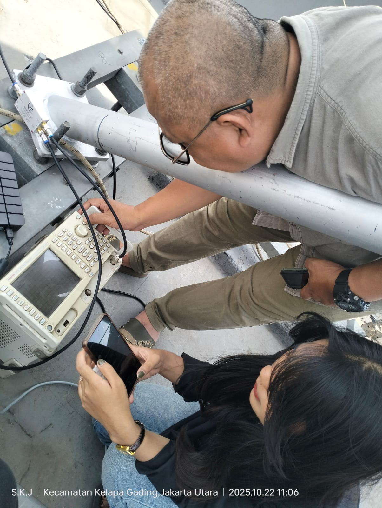
Equipment checks and RF signal-path troubleshooting.
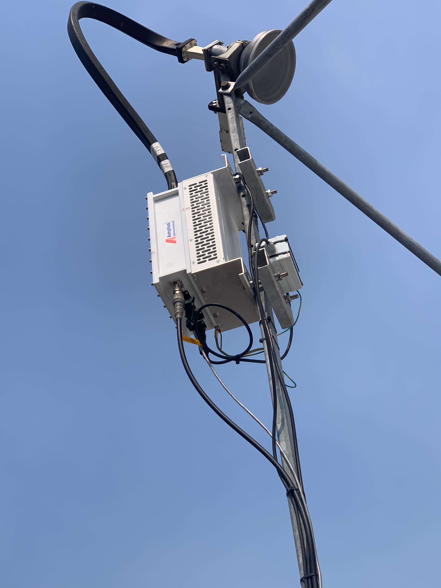
Outdoor RF equipment and diversity-system activities.
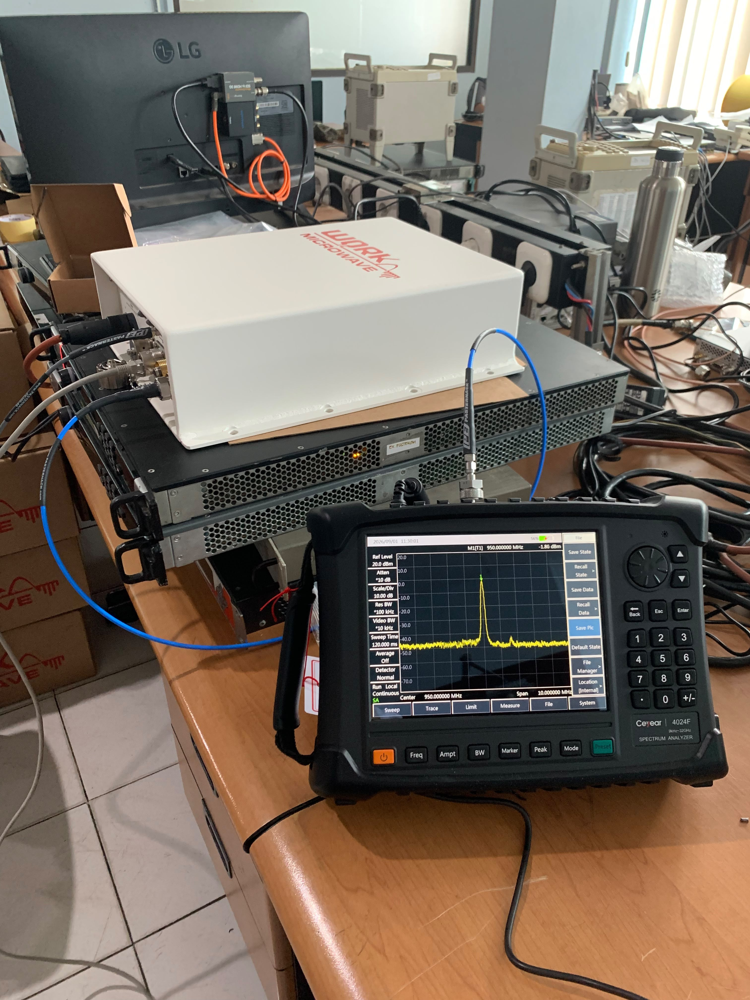
Service checks and verification of system performance.
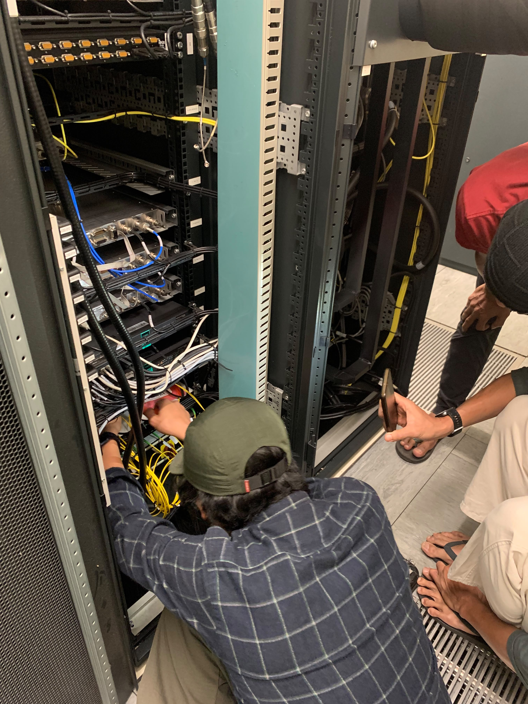
Recording findings, analysis, and recommended actions.
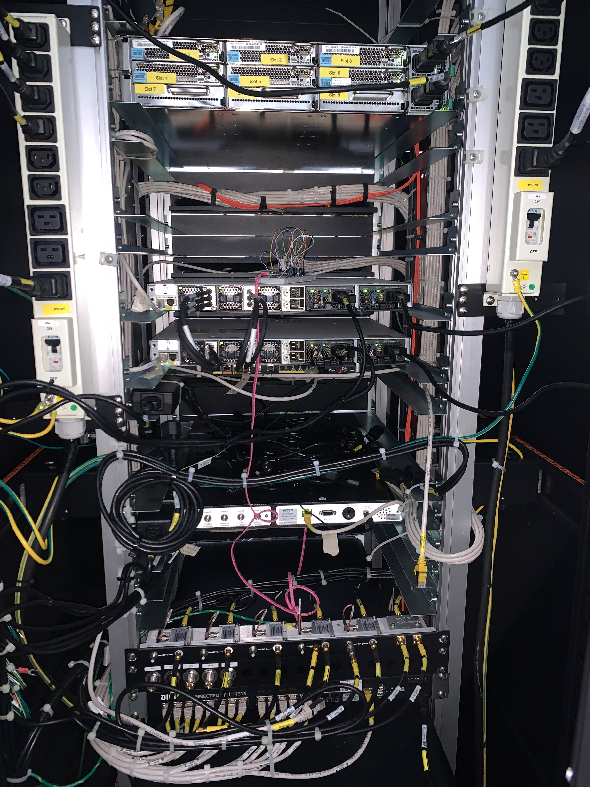
Maintenance activities and operational support at field locations.
For customer confidentiality, avoid uploading photos that expose site coordinates, IP addresses, credentials, network diagrams, customer names, or restricted equipment details.